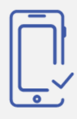

approach that suggests that design and development should respond to the user's behavior and environment based on screen size, platform and orientation.
RESPONSIVE WEB DESIGN

Mobile application development is the process of making or creating a mobile application to run on various mobile platforms. A mobile platform is a mobile operating system.